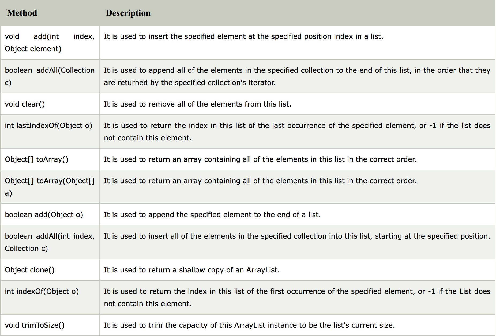

All collections frameworks contain

List :Duplicate : allow any number of duplicatesOrder : keeps insertion ordernull elements : allow any number of null valuesImplementations : ArrayList, LinkedList, Vector- When to use:
- need to access elements frequently by using the index
- need to keep insertion order to store elements
Set :Duplicate : doesn't allow duplicatesOrder : unorderednull elements : one null valuesImplementations : HashSet, LinkedHashSet, TreeSet- When to use:
- don't want any duplicates
- Additional Features:
- TreeSet is a SortedSet and elements stored on TreeSet can be sorted by using Comparator or Comparable in Java.
- LinkedHashSet also maintains insertion order.
Duplicate : may contain duplicate values but keys are always uniqueOrder : referenced by key/value pairnull elements : Hashtable doesn't allow null key or values but HashMap allows null values and one null key (main difference between Hashtable and HashMap)Implementations : HashMap, LinkedHashMap, Hashtable, TreeMap- When to use:
- need to store data in form of key and value
It inherits AbstractList class and implements List interface.
- Can contain duplicate elements.
- Java ArrayList class maintains insertion order.
- Allows random access because array works at the index basis.
- Manipulation is slow because a lot of shifting needs to be occurred if any element is removed from the array list.

Traversing the ArrayList
Two ways:
- Iterator interface
- for-each loop
//Traversing list through Iterator
Iterator itr=list.iterator();
while(itr.hasNext()){
System.out.println(itr.next());
}
/******************************/
// traversing using for-each loop
for(String obj:al)
System.out.println(obj);
}
Complexity of
- add: O(1)
- remove: O(n)
- get: O(1)
- contains: O(n)
It inherits the AbstractList class and implements List and Deque interfaces.
Important:
- can contain duplicate elements.
- maintains insertion order.
- non synchronized.
Complexity of
- add: O(1)
- remove: O(1)
- get: O(n)
- contains: O(n)
ArrayList is faster with O(1) using get(int index)
Linked List has O(n)
ArrayList has O(n) for worst case since it needs shifting if delete first element.
Linked List has O(1)
ArrayList has O(n) because of shifting.
Linked List has O(1).
When to use
* Frequent deletion and addition:
* Frequent search operations:
Vector implements
- Synchronization
- ArrayList is non-synchronized which means multiple threads can work on ArrayList at the same time.
- Vector is synchronized. This means only one thread can perform an operation on vector at a time.
- Performance
- ArrayList has better performance since it is non-synchronized. Vector is thread safe.
It inherits the
Important
- Using hashing to store elements
- HashSet contains unique elements only
- null elements are allowed in HashSet
- Underlying data structure for HashSet is HashTable
- There's no order of HashSet
List is an ordered sequence of elementsSet is a distinct list of elements which is unordered
HashSet set = new HashSet();
set.add("Hash");
Traverse through HashSet
use next()
Complexity
- add: O(1)
- contains: O(1)
LinkedHashSet class is a Hash table and Linked list implementation of the set interface. It inherits HashSet class and implements Set interface.
Important
- Contains unique elements only like HashSet
- Provides all optional set operations, and permits null elements
- Maintains insertion order
- add: O(1)
- contains: O(1)
TreeSet class implements the Set interface that uses a tree for storage. It inherits AbstractSet class and implements NavigableSet interface. The objects of TreeSet class are stored in ascending order.
Important
- Contains unique elements only like HashSet
- Access and retrieval times are quiet fast
- Maintains ascending order
- add: O(logn)
- contains: O(logn)
- FIFO: enqueue ->| ||||| |-> dequeue
- enqueue(), dequeue(), isFull(), isEmpty(), front() and rear() is O(1)
The PriorityQueue class provides the facility of using queue. But it does not orders the elements in FIFO manner. It inherits AbstractQueue class.
An unbounded priority queue based on a priority heap.
Important
- The elements of the priority queue are ordered according to their natural ordering, or by a Comparator provided at queue construction time, depending on which constructor is used.
- A priority queue does not permit null elements.
- not synchronized
boolean offer(): same as add() - O(logn)poll(): remove head of queue and return - O(logn)peek(): O(1)
Deque is a Queue in which you can add and remove elements from both sides.
It has two implementations:
Methods of Deque Interface
- void addFirst()
- void addLast()
- boolean contains()
- getFirst()
- getLast()
- pollFirst()
- pollLast()
- peekFirst()
- peekLast()
- size()
The ArrayDeque class provides the facility of using deque and resizable-array. It inherits AbstractCollection class and implements the Deque interface.
Important
- can add or remove elements from both sides
- Null elements are not allowed in the ArrayDeque
- Not thread safe
- no capacity restrictions
- ArrayDeque is faster than LinkedList and Stack